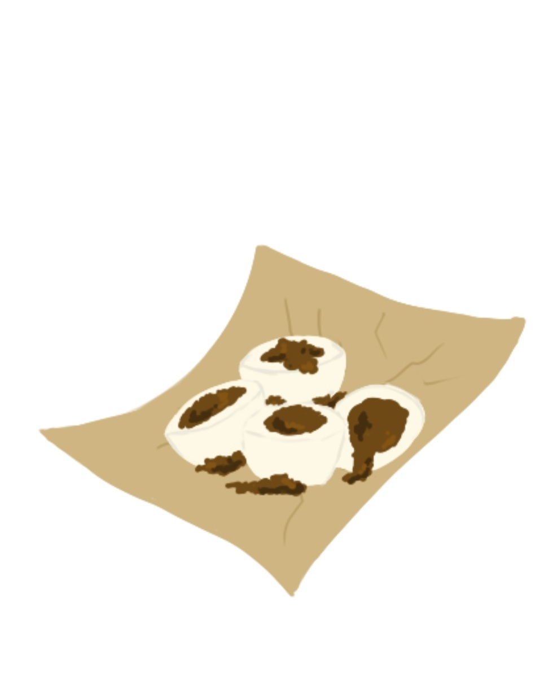
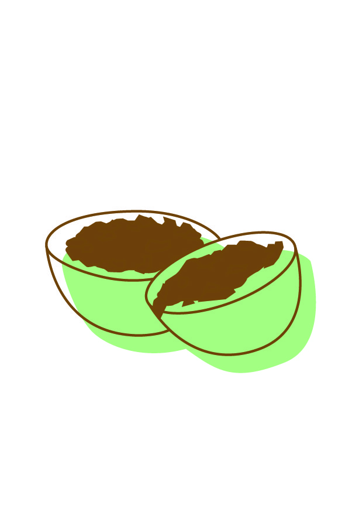

Task: To create a set of the best local kuehs/pastries from our local ethnic groups in iconic styling.
In this project, I made use of the techniques I learned in Adobe Illustrator to create vector art for my favourite local kuehs in Singapore. Furthermore exploring the differetn artstyles such as vector styling with colours, black and white outlines, and dual tone drawings
Ondeh ondehs and chwee kueh are simply the best when you're craving some local delights. I wanted to try my hands on merging the kuehs and some cute animals together to make a kueh animal! Below, you will see the animals I created, called Ondeh-pillar and Chwee-xolotl

